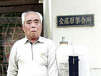
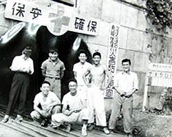
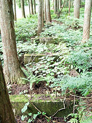

よみがえる土倉鉱山の記憶（聞き取り年月日場所：2006年6月3日 金居原集会所）  滋賀県伊香郡木之本町金居原在住の吉岡武さんは、昭和2年、地元の生まれ。日窒土倉鉱業所の測量技師 だった。昭和49年からは町会議員を3期務めた。「年のせいかだんだんと土倉鉱山の記憶も薄れていく」と言いながら、今回、 土倉鉱山に関する貴重なお話を得ることができた。
北陸高速道木之本インターから国道303号線を約16キロ。金居原集落のはずれからは約2キロほど同国道を上った所に土倉鉱山跡
への入口がある。岐阜県境にまたがる標高1003メートルの土蔵岳の山麓にあり、県内唯一の、銅、硫化鉄、少量の金・銀、微量の
鉛を産出していた。その滋賀県伊香郡木之本町金居原は「かねいはら」と読むが、地元の人は「かねばら」と呼ぶ。
金居原の入り口には「県境の里 金居原」という看板が掲げられている。目前の山を越えるともう岐阜県坂内村である。
土倉鉱山の選鉱所跡へ至る入り口の付近一帯には、昭和40年3月土倉鉱山が閉山されるまでの間、金居原地区の枝郷「出口土倉
(堀近村)」と呼ばれた集落があった。鉱山事務所、職員寮、医局、映画館、マーケットなどが建ち並び、秋田・岩手・愛媛等の東
北や四国地方、大分・宮崎等の九州地方から集まった鉱山労働者たちの坑夫社宅が軒を連ねていた。
出口土倉から杉野川沿いに少し上がると、目の前にコンクリート造りの建造物が勇壮な姿で広がって見える。土倉鉱山の選鉱所
跡である。しかしこれは、昭和15年に新設された2代目の選鉱所で、最初の選鉱所はさらに奥地の「奥土倉(本土倉)」にあった。
昭和15年から閉山の昭和40年までの間、金居原地区からも75名ほどの人が土倉鉱山で働いた。主に炭焼き等林業で生計を立てて
いた金居原の人たちにとって土倉鉱山は唯一の企業であった。 「日本の敗戦で北朝鮮の日窒で働いていた仲間60人ほどの内40名が餓死した。私は幸い果樹栽培を得意としたから朝鮮人のリンゴ 園を手伝い、地元民からも重宝がられ、『ここで暮らせ』とまで言われて餓死することはなかったが、『国に残る母親と姉が心配だ から帰らなくてはならない』と言って、子供を含む20人ほどで北朝鮮からの脱出を決意した」という。吉岡さんらは最初漁船1隻を 雇って日本を目指したが、「ここはもう南朝鮮だから」と言って、とある港で降ろされた。しかしそこはまだ北朝鮮だった。 だまされたことを知った吉岡さんらは軍事境界線（38度線）を越えるため再び現地の人を雇って今度は山を越えることにした。幼子 を伴った山越えは決死の逃避行だったという。なんとか頂上までたどり着き、「ここを下ればアメリカ軍がいるから助けてもらえ」 と教えられ、今度はそのとおり米軍に保護され船に乗ることに成功。九州が見えたときは「涙があふれおもわず拝んだ」という。 それが昭和21年3月の頃だった。

故郷へ無事帰ることができた吉岡さんは戦後再び日窒土倉鉱業所で測量技師として働いた。掘り進められた坑道の地図を作成
したりする仕事だった。そのうち吉岡さんは土倉鉱山労働組合の執行委員としても活躍するようになり、賃上げ等を要求しストライ
キもした。東京へも行き、「安保反対」のタスキもかけて都内をデモ行進したりしたこともあった。その頃が鉱山で働く者にとって
華やかりし頃だったのかもしれない。
昭和15年から同40年までの間、土倉鉱山で働いていた人たちは2006年6月1日現在で、金居原地区75名の内45名が亡くなり、隣村の
杉野地区では21名の内12名が、杉本地区・音羽地区・川合地区等においては25名の内9名が亡くなった。
金居原には、真宗本願寺派光琳寺と真宗大谷派掘近教会の二つの寺がある。それぞれの過去帳には、土倉鉱山で亡くなった人たち
の名前等が書き記されているという。残念ながらそれを見せてもらうことは出来なかったが、これも土倉鉱山の歴史を語る貴重な
資料であると考える。どこからどういう人が土倉鉱山へ生活の糧を求めて旅稼ぎにきていたか、伺い知ることができるからだ。
金居原に平成17年新設された金居原浄苑がある。同所の記念碑には「昭和30年頃から日窒鉱業と提携して火葬場を建設、最近まで
存続されてきた」とあり、日窒鉱業が地元・金居原と密接にかかわってきたことを伺い知ることが出来る。吉岡さんは、「その頃は、
金居原では土葬がほとんどであったが、県外から土倉鉱山へ働きにきて亡くなった人たちは火葬にされていた。だから、金居原にあっ
た火葬場は土倉鉱山のために建てられたようなものだった。お骨はそれぞれの故郷へ帰って行った。」と語る。  鉱山の社宅跡前に立つと、喜怒哀楽、様々なざわめきが聴こえてくる。ここで暮らしていた人たちはどこへ去って行ったのか。それ は私の故郷の三池炭鉱跡にも似ている。三池炭鉱があった町は今、旧産炭地からの脱却に必死であるが、ここ金居原地区の枝郷・奥土 倉(土倉村)と出口土倉(堀近村)の集落は廃村となり、山に同化してしまった。しかし、去っては行ったが、特にここで生まれ育った子 供たちにとってはここがやっぱり忘れられないふるさとであるはずだ。その記憶の中のヤマの灯だけは決して消してはならない。
|